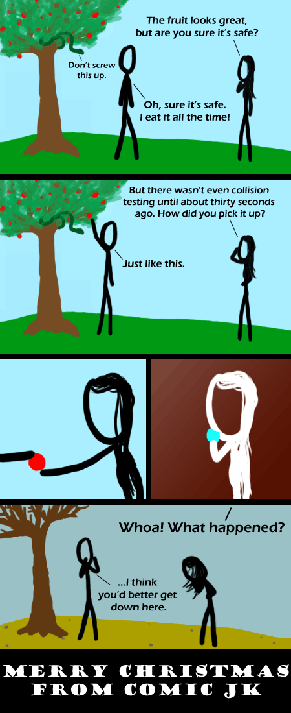

Comic JK 320
When I Feel Like It
⇤
<
?
>
⇥

⇤
<
?
>
⇥
Forum
.
RSS
.
Digg
.
Facebook
.
Reddit
.
Twitter
.
Stumbleupon
Enter your thoughts on number 320 here. Please, no spamming, trolling, or phreaking, or collision edit testing. BOOBS! >OMG IT IS SO. first necks, now this? So... void pointers, eh? So useful... is our resident God here called Malloc? FIRST! -Csana Dude, I am impressed with eve's hair. ~probably first >So am I, it's pretty fille(t). Not at all. Or the other thing. ~even firster. Wait, isn't it entirely dynamic so you cannot really tell who was first? ~first maybe MERRY CHRISTMAS COMICJK! ~first Merry Christmas to you. Excellent series so far. ~FIIIIIIIIIIIIIRRRRRRRRRRRRSSSSSSSSSSSSSSSSTTTTTTTTTTTTTTT!!!!!!!!!!!!!!..b& 4 life Does Eve have boobs? >They're discreetly masked by her hair. I've read the Bible. Pretty sure this isn't how it happened. >That was written by men. Of course they blamed her. >>Actually, in the Bible it is pretty clearly the man's fault... Eve was deceived and therefore not a willing sinner, Adam knew exactly what he was doing and therefore was the person all the blame was put on. >>>Just like you women to blame the man. lol >>>>Noone blames the snake? >>>>>The snake got punished by being forced to pre-alpha test hell. Does look like a bit of a glitch there. >And that's how Adam and Eve were banned from the Garden of Eden map. Where are their fig leaves? Oh god, my innocence! >Agh! The disturbing anatomy of stick figures! >>The fig leaves only happened after this. When God came down he informed them of the poor job they did at making clothes, and made them some decent ones. Like a parent or partner insisting that you go shopping for better clothes, only they make you better clothes instead. Your mother likes my forbidden fruity man juice. > +1